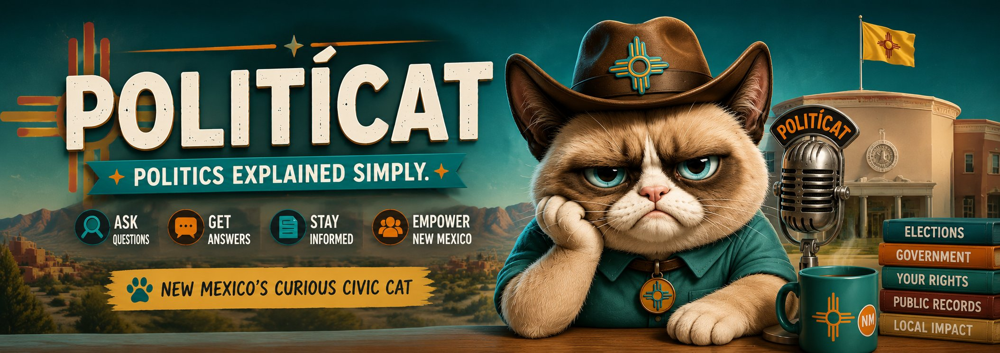

Fact
Answers from records.
For direct civic questions, Don Gato gives the plain-language answer, the source, the record date, and the trail used to verify it.
Curiosity > Politics
Understand government, elections, public records, and your rights — one question at a time. No spin. No party. Just clear answers for everyday New Mexicans.
PolitíCat explains the steps. Official New Mexico sources confirm the details.
Use New Mexico's official voter portal to look up voting locations, registration details, sample ballots, absentee status, and county clerk information.
Find locations, hours, and voter information through official NM sources.
Official source: sos.nm.govConfirm your voter record before deadlines get close.
Use official tools to view sample ballot information for your address.
Review absentee, early voting, and in-person options.
County clerks handle many local election questions.
Verify your voter registration through the official voter portal.
NMVote.orgReview official absentee and early voting information.
sos.nm.govLearn registration options, eligibility basics, and update paths.
sos.nm.govFind the local office for county-specific election questions.
sos.nm.govLook up bills, legislators, committees, and sessions.
nmlegis.govPolitíCat changes how it answers based on the kind of question you ask, so facts, investigations, trends, and accountability questions are not treated like the same thing.
PolitíCat does not tell people what to think.
PolitíCat shows what records exist, what they say, and what is still unknown.
For direct civic questions, Don Gato gives the plain-language answer, the source, the record date, and the trail used to verify it.
For questions over time, PolitíCat uses dated data series and tells you where the record begins and ends.
When the answer is not settled, PolitíCat shows records found, what is still unknown, and which records to check next.
For public accountability questions, PolitíCat separates what records prove from explanations that need deeper review.
Today PolitíCat answers from a small set of Civic Substrate voter-registration queries. Next, the same trust model can map grants, budgets, notices, contracts, and other public records without pretending the full records network is already built.
The things New Mexicans ask most. Tap any card to see how Don Gato breaks it down.
Ask anything about New Mexico civics in plain language. Don Gato answers simply — and tells you where to verify it yourself.
🐾 PolitíCat is a civic education guide, not legal advice or an official government source. Always verify with official New Mexico state and county resources — Don Gato will point you there.
Don Gato meets you wherever you are — whether you want a quick answer, the receipts, or a seat at the table.
Real questions, real answers. Understand how government and elections actually work — because knowledge makes stronger communities.
We dig into the facts so you don't have to. Official sources, plain language, no spin — complex stuff made simple.
Your questions matter. Real conversations build stronger communities — be informed, be involved, make an impact.
Questions are better together. Follow along, share what you learn, and keep New Mexico informed.
Ask, learn, and chat civics
Civics in 60 seconds
Updates & explainers
Civics, one post at a time
Explainers & deep dives
Join the conversation
Quick civic takes
Reach the den directly

"Curiosity > Politics."
PolitíCat NM is a civic education brand built on one idea: when people understand how government actually works, everyone wins. We help New Mexicans make sense of elections, public records, and civic issues — one question at a time.
Don Gato Cívico is our host: curious, a little skeptical, and allergic to spin. He doesn't tell you what to think. He helps you understand, then points you to the real source so you can decide for yourself.